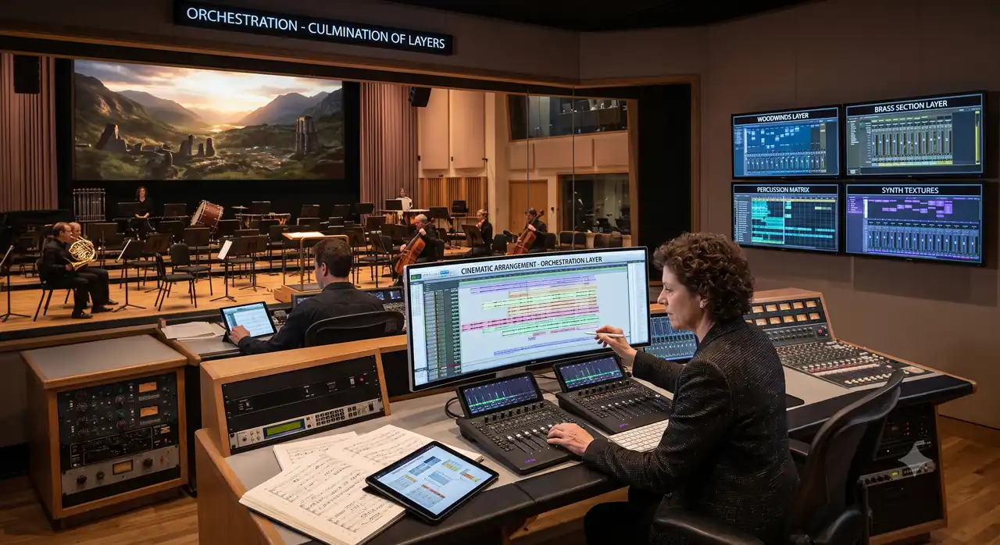
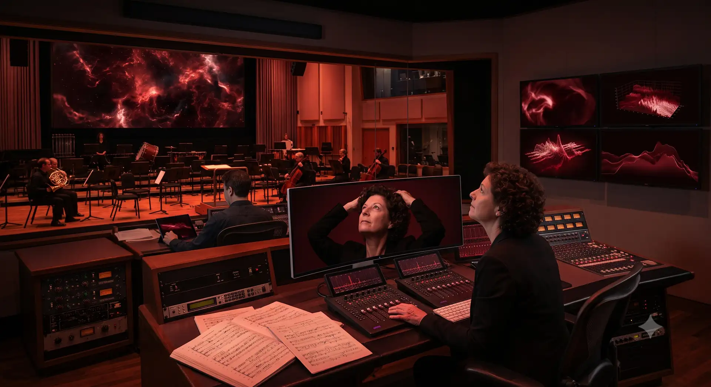

The Silent Sea
Film Score / 2026
Neon Nights
Album / 2025

City Lights
Film Score / 2024

Echoes
Single / 2023

Void
Album / 2022

Horizon
Film Score / 2021
Featured Composition
A minimalist orchestral piece that slowly builds into an overwhelming wall of sound, representing the calm before the storm.
Film Score / 2026
Album / 2025

Film Score / 2024

Single / 2023
Album / 2022
Film Score / 2021
STACKLY • Film Score